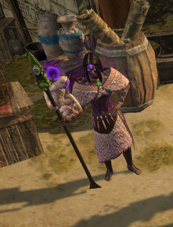

Навалі - НІП, який дає гравцям пророцтво за одну Срібну монету.Але спочатку Навалі потрібно врятувати в "The Climb", який потім повернеться в місто.Гравці можуть поговорити з Навалі в будь-якому місті, щоб побачити, знайти і запечатати пророцтва. У будь-який час гравці можуть мати максимум 7 активних пророцтв, як показує інтерфейс праворуч.
- Перегляд: пророцтва можна зробити, відкривши панель завдань/досягнень, а потім перемкнувшись на вкладку Пророцтво, або поговоривши з Навалі
- Пошук: пророцтва означає обмін "Срібної монети" для випадкового нового пророцтва, яке потім активується для гравця.
- Запечатування пророцтв: означає перетворення активного пророцтва на товарний об 'єкт з тією самою назвою, наприклад
Некоректні з "єднання
є пророцтвом, що зберігається в торговельній формі, яка часто торгується для багатьох
"Куля піднесення" завдяки своїй здатності 6-зєднань будь-який елемент. Коштує кілька срібних монет, щоб запечатати пророцтво.